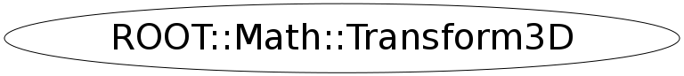

class ROOT::Math::Transform3D
Basic 3D Transformation class describing a rotation and then a translation
The internal data are a 3D rotation data (represented as a 3x3 matrix) and a 3D vector data.
They are represented and held in this class like a 3x4 matrix (a simple array of 12 numbers).
The class can be constructed from any 3D rotation object
(ROOT::Math::Rotation3D, ROOT::Math::AxisAngle, ROOT::Math::Quaternion, etc...) and/or
a 3D Vector (ROOT::Math::DislacementVector3D or via ROOT::Math::Translation ) representing a Translation.
The Transformation is defined by applying first the rotation and then the translation.
A transformation defined by applying first a translation and then a rotation is equivalent to the
transformation obtained applying first the rotation and then a translation equivalent to the rotated vector.
The operator * can be used to obtain directly such transformations, in addition to combine various
transformations.
Keep in mind that the operator * (like in the case of rotations ) is not commutative.
The operator * is used (in addition to operator() ) to apply a transformations on the vector
(DisplacementVector3D and LorentzVector classes) and point (PositionVector3D) classes.
In the case of Vector objects the transformation only rotates them and does not translate them.
Only Point objects are able to be both rotated and translated.
@ingroup GenVector
Function Members (Methods)
public:
protected:
| void | AssignFrom(const ROOT::Math::Rotation3D& r) |
| void | AssignFrom(const ROOT::Math::Transform3D::Vector& v) |
| void | AssignFrom(const ROOT::Math::Rotation3D& r, const ROOT::Math::Transform3D::Vector& v) |
| void | SetIdentity() |
Class Charts
{kind=link}
{kind=link}
{kind=link}
{kind=link}

Function documentation
Transform3D(IT begin, IT end)
Construct given a pair of pointers or iterators defining the
beginning and end of an array of 12 Scalars
SetComponents(double* begin, double* end)
Transform3D( const Rotation3D & r, const Vector & v)
Construct from a rotation and then a translation described by a Vector
AssignFrom(const ROOT::Math::Rotation3D& r, const ROOT::Math::Transform3D::Vector& v)
Transform3D( const Rotation3D & r, const Translation3D & t)
Construct from a rotation and then a translation described by a Translation3D class
AssignFrom(const ROOT::Math::Rotation3D& r, const ROOT::Math::Transform3D::Vector& v)
Transform3D( const ARotation & r, const DisplacementVector3D<CoordSystem,Tag> & v)
Construct from a rotation (any rotation object) and then a translation
(represented by any DisplacementVector)
The requirements on the rotation and vector objects are that they can be transformed in a
Rotation3D class and in a Cartesian3D Vector
AssignFrom(const ROOT::Math::Rotation3D& r, const ROOT::Math::Transform3D::Vector& v)
Transform3D( const ARotation & r, const Translation3D & t)
Construct from a rotation (any rotation object) and then a translation
represented by a Translation3D class
The requirements on the rotation is that it can be transformed in a
Rotation3D class
Transform3D( const Vector & v, const Rotation3D & r)
Construct from a translation and then a rotation (inverse assignment)
explicit Transform3D( const AxisAngle & r)
convenience methods for constructing a Transform3D from all the 3D rotations classes (cannot use templates for conflict with LA)
explicit Transform3D( const EulerAngles & r)
explicit Transform3D( const Quaternion & r)
explicit Transform3D( const RotationZYX & r)
explicit Transform3D( const RotationX & r)
Constructors from axial rotations TO DO: implement direct methods for axial rotations without going through Rotation3D
explicit Transform3D( const RotationY & r)
explicit Transform3D( const RotationZ & r)
explicit Transform3D( const DisplacementVector3D<CoordSystem,Tag> & v)
Construct from a translation only, represented by any DisplacementVector3D
and with an identity rotation
explicit Transform3D( const Vector & v)
Construct from a translation only, represented by a Cartesian 3D Vector,
and with an identity rotation
explicit Transform3D( const Translation3D & t)
Construct from a translation only, represented by a Translation3D class
and with an identity rotation
Transform3D(const DisplacementVector3D<CoordSystem,Tag> & v , const ARotation & r)
#if !defined(__MAKECINT__) && !defined(G__DICTIONARY) // this is ambigous with double * , double * Construct from a translation (using any type of DisplacementVector ) and then a rotation (any rotation object). Requirement on the rotation and vector objects are that they can be transformed in a Rotation3D class and in a Vector
explicit Transform3D(const ForeignMatrix & m)
use compiler generated copy ctor, copy assignmet and dtor
Construct from a linear algebra matrix of size at least 3x4,
which must support operator()(i,j) to obtain elements (0,0) thru (2,3).
The 3x3 sub-block is assumed to be the rotation part and the translations vector
are described by the 4-th column
Transform3D(double xx, double xy, double xz, double dx, double yx, double yy, double yz, double dy, double zx, double zy, double zz, double dz)
Raw constructor from 12 Scalar components
Transform3D & operator=(const ROOT::Math::Transform3D& )
Construct from a linear algebra matrix of size at least 3x4,
which must support operator()(i,j) to obtain elements (0,0) thru (2,3).
The 3x3 sub-block is assumed to be the rotation part and the translations vector
are described by the 4-th column
void GetComponents(IT begin, IT end)
Get the 12 matrix components into data specified by an iterator begin
and another to the end of the desired data (12 past start).
void GetComponents(double* begin) const
Get the 12 matrix components into data specified by an iterator begin
void GetDecomposition(AnyRotation &r, V &v)
Get the rotation and translation vector representing the 3D transformation
in any rotation and any vector (the Translation class could also be used)
GetRotation(r)
void GetDecomposition(Rotation3D &r, Vector &v)
Get the rotation and translation vector representing the 3D transformation
GetRotation(r)
Point operator()(const Point & p)
operations on points and vectors
Transformation operation for Position Vector in Cartesian coordinate
For a Position Vector first a rotation and then a translation is applied
Vector operator()(const Vector & v)
Transformation operation for Displacement Vectors in Cartesian coordinate
For the Displacement Vectors only the rotation applies - no translations
PositionVector3D<CoordSystem> operator()(const PositionVector3D <CoordSystem> & p)
Transformation operation for Position Vector in any coordinate system
return ! operator==(rhs)
return Transform3D(double xx, double xy, double xz, double dx, double yx, double yy, double yz, double dy, double zx, double zy, double zz, double dz)
combination of transformations
return Transform3D( r, r(t.Vect()) )
global functions resulting in Transform3D ------ combination of a translation (first) and a rotation ------ combine a translation and a rotation to give a transform3d First the translation then the rotation
return Transform3D( r3, r3(t.Vect()) )